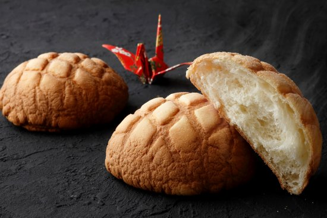

Melon pan, a beloved Japanese sweet bread, is a delightful treat known for its distinctive appearance resembling a melon, though it does not typically contain melon flavor. The combination of a soft, fluffy bread interior and a thin layer of sweet cookie dough on the outside creates a delightful contrast in texture.
Meal prep time : 4 hours
Servings : 8-10